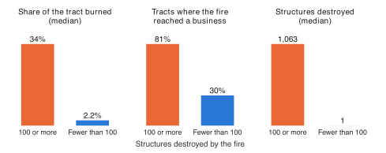
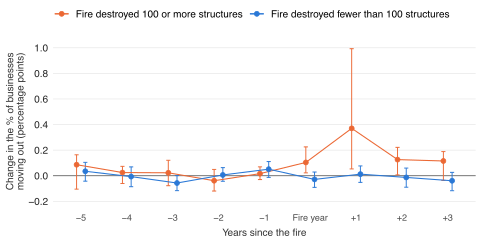
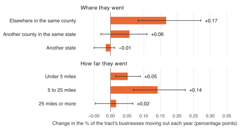
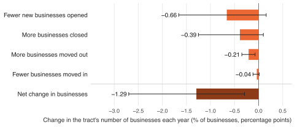

-
01
Most large fires do not move businesses
Large fires that destroyed fewer than 100 structures left business moves unchanged. The estimate rules out changes larger than about 7 percent in either direction. This is our most certain result, and it covers most fires.
-
02
Destructive fires do
After fires that destroyed 100 or more structures, about one more business a year moved out of each burned tract, roughly a quarter more than before the fire. Moves peaked in the first full year after the fire.
-
03
Displaced businesses stay close
Four in five of the added moves ended elsewhere in the same county, and nine in ten covered less than 25 miles. Moves out of state did not rise.
-
04
Fewer businesses may open
Burned tracts added about 1.3 percent fewer businesses a year than comparison tracts. About half of that gap came from fewer openings, and only a fifth from relocation. This evidence is weaker than the evidence on moves.
Preliminary findings · Working paper
Which wildfires move businesses?
The ones that destroy buildings. Across 11 western states, most large wildfires left business relocation unchanged. Fires that destroyed 100 or more structures pushed more businesses out of burned neighborhoods, and most of those businesses stayed in the same county.
Summary
Four findings
When a fire damages a business, or burns the homes of its customers and workers, the owner can rebuild, wait, move or close. We ask whether wildfires make businesses move, which fires do, and where the businesses go.
Figures
The evidence
Each estimate compares burned census tracts with unburned tracts in the same county, before and after the fire. Select a figure to open it full size.
Census tracts burned by large wildfires, 2013–2019

Destructive fires burned more of the tract and more often reached businesses

Year by year, moves out rose only after destructive fires

Most added moves stayed in the county and within 25 miles

Relocation was only part of the slower business growth

Methods
About the study
We follow business locations and moves from 2010 to 2021 in the census tracts of Arizona, California, Colorado, Idaho, Montana, Nevada, New Mexico, Oregon, Utah, Washington and Wyoming. We study 496 tracts touched by a wildfire larger than 1,000 acres between 2013 and 2019. A fire counts as destructive if it destroyed 100 or more structures: 146 tracts were hit by one of 24 destructive fires, and 350 by other large fires.
For each burned tract, we compare business moves in the three years before the fire with the three years starting with the fire year, and subtract the change over the same years in unburned tracts of the same county with similar fire hazard. This removes conditions that burned and unburned neighbors share, such as the local economy, drought and smoke.
Business locations and moves come from the National Establishment Time-Series, built from Dun & Bradstreet records. Fire boundaries come from the Monitoring Trends in Burn Severity program, and structure losses from wildfire incident reports (the ICS-209-PLUS database).
How confident are we?
These results are preliminary. The finding that ordinary large fires do not move businesses is the firmest. The destructive-fire findings rest on 24 fires: nine in ten of the affected tracts are in California, and most burned in 2017 or 2018. Without the 2018 fires, the increase in moves is about 40 percent smaller.
The working paper is available on request: richarda@uidaho.edu.
Back to research